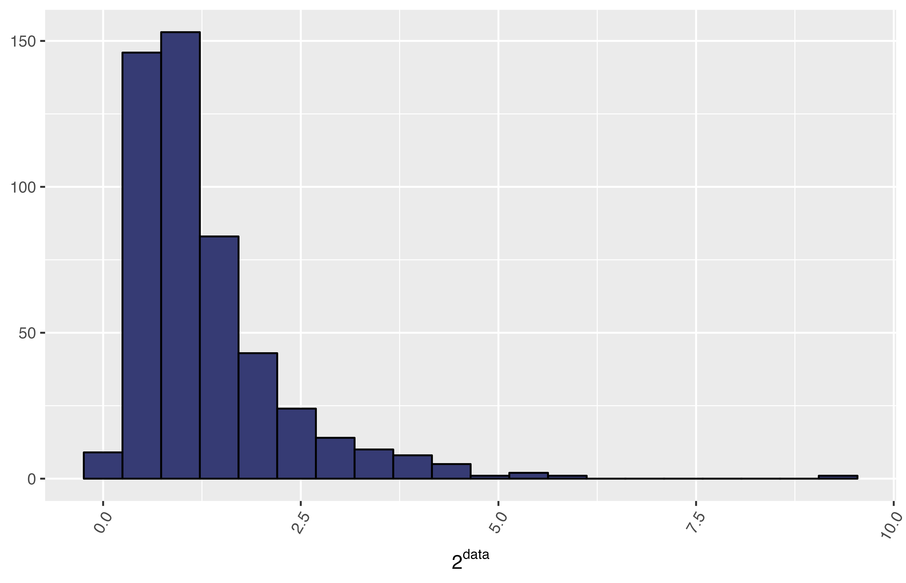

MetaPipe assesses the normality of variables (traits) by performing a Shapiro-Wilk test on the raw data (see Load Raw Data and Replace Missing Data). Based on whether or not the data approximates a normal distribution, an array of transformations will be computed, and the normality assessed one more time.
The diagram below shows the tree of transformations that can be performed, the user can specify the transformation values passing a vector with the argument transf_vals to the function assess_normality; by default, [2, e, 3, 4, 5, 6, 7, 8, 9, 10].
The function call is as follows:
assess_normality(raw_data = raw_data, excluded_columns = c(2, 3, ..., M), # Optional cpus = 1, out_prefix = "metapipe", plots_dir = getwd(), transf_vals = c(2, exp(1), 3, 4, 5, 6, 7, 8, 9, 10))
where raw_data is a data frame containing the raw data, as described in Load Raw Data and excluded_columns is a vector containing the indices of the properties, e.g. c(2, 3, ..., M). The other arguments are optional, cpus is the number of cores to use, in other words, the number of concurrent traits to process, out_prefix is the prefix for output files, plots_dir is the output directory where the plots will be stored, and transf_vals is a vector containing the transformation values to be used when transforming the original data.
Example
The following histogram shows a sample data obtained from a normal distribution with the command rnorm, but it was transformed using the power (2) function; thus, the data seems to be skewed:

Using MetaPipe we can find an optimal transformation that “normalises” this data set:
example_data <- data.frame(ID = 1:500, T1 = test_data, T2 = 2^test_data) transformed_data <- MetaPipe::assess_normality(example_data, c(1)) head(transformed_data) #> index feature values flag transf transf_val #> 1 1 T1 -0.56047565 Normal NA #> 2 1 T1 -0.23017749 Normal NA #> 3 1 T1 1.55870831 Normal NA #> 4 1 T1 0.07050839 Normal NA #> 5 1 T1 0.12928774 Normal NA #> 6 1 T1 1.71506499 Normal NA head(transformed_data[-c(1:500), ]) #> index feature values flag transf transf_val #> 501 2 T2 -0.56047565 Normal log 2 #> 502 2 T2 -0.23017749 Normal log 2 #> 503 2 T2 1.55870831 Normal log 2 #> 504 2 T2 0.07050839 Normal log 2 #> 505 2 T2 0.12928774 Normal log 2 #> 506 2 T2 1.71506499 Normal log 2